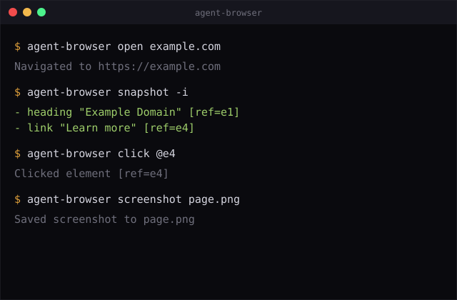

Browser headless controlado por CLI, feito pra agentes de IA: snapshot de accessibility tree com refs estáveis, seletores semânticos, sessões isoladas e daemon rápido em Rust com fallback em Node.js.

agent-browser é uma CLI Rust (com fallback Node.js) que controla um Chromium headless via Playwright. Em vez de escrever scripts de automação, o agente digita comandos — e recebe de volta um accessibility tree com refs estáveis (@e1, @e2...) prontos pra clicar, preencher e ler.
Um binário Rust nativo fala com um daemon Node.js que mantém o Playwright vivo entre comandos — sem reabrir browser a cada chamada.
snapshot devolve a árvore de acessibilidade com refs (@e1); click @e2 aponta pro elemento exato, sem depender de CSS que muda.
Múltiplas sessões isoladas (--session), conexão a browsers existentes via CDP e streaming ao vivo do viewport por WebSocket.
O fluxo recomendado pra agentes de IA: navegar, tirar um snapshot da árvore de acessibilidade, e interagir pelos refs que o snapshot devolveu — sem inspecionar HTML manualmente.
Binário nativo rápido que parseia os comandos e fala com o daemon. Cai pra Node.js se o binário não estiver disponível na plataforma.
Mantém a instância do Playwright viva entre comandos — inicia sozinho no primeiro comando e persiste pras chamadas seguintes.
Motor padrão é Chromium; o daemon também suporta Firefox e WebKit pelo protocolo do Playwright.
Duas formas de instalar: via npm (recomendado) ou compilando do código-fonte (precisa de Rust pro binário nativo).
Pra instalar globalmente via npm.
# instala a CLI npm install -g agent-browser agent-browser install # baixa o Chromium
Só necessário se for compilar do código-fonte pra ter o binário nativo Rust.
git clone https://github.com/inematds/agent-browser cd agent-browser && pnpm install pnpm build && pnpm build:native
O Chromium do Playwright precisa de libs de sistema no Linux.
agent-browser install --with-deps # ou manualmente: npx playwright install-deps chromium
O caminho mais curto: instalar, abrir uma página, tirar um snapshot, interagir pelos refs e fechar o browser.
Instala a CLI globalmente e baixa o browser que ela vai controlar.
npm install -g agent-browser agent-browser install # baixa o Chromium
O daemon sobe sozinho no primeiro comando e fica ativo entre chamadas.
agent-browser open example.com # aliases: goto, navigate
Devolve elementos com refs estáveis (@e1, @e2...) — a forma recomendada pra agentes escolherem o alvo certo.
agent-browser snapshot # - heading "Example Domain" [ref=e1] [level=1] # - link "Learn more" [ref=e4]
Clique, preencha e leia usando as refs do snapshot — sem CSS frágil.
agent-browser click @e2 # clica o botão agent-browser fill @e3 "test@example.com" # preenche o campo agent-browser get text @e1 # lê o texto
Screenshot vai pro arquivo indicado; sem caminho, sai como PNG base64 no stdout.
agent-browser screenshot page.png agent-browser close # aliases: quit, exit
Use --json pra saída legível por máquina — é o formato pensado pra um LLM parsear a árvore e os refs.
agent-browser snapshot -i --json # {"success":true,"data":{"snapshot":"...","refs":{"e1":{"role":"heading","name":"Title"},...}}}
Refs são o recomendado, mas CSS, texto, XPath e locators semânticos (role, label, placeholder, testid) também funcionam.
agent-browser click "#submit" agent-browser find role button click --name "Submit" agent-browser find label "Email" fill "test@test.com"
Rode múltiplos agentes em paralelo, cada um com seu próprio browser, cookies e histórico.
agent-browser --session agent1 open site-a.com agent-browser --session agent2 open site-b.com agent-browser session list
O --help da CLI é completo; estas são as famílias de comandos disponíveis (ver README pro detalhe de cada uma).
| Categoria | Exemplos |
|---|---|
| Core | open · click · fill · type · press · hover · scroll · drag · upload · screenshot · pdf · snapshot · eval · connect · close |
| Info / estado | get text/html/value/attr/title/url/count/box · is visible/enabled/checked |
| Busca semântica | find role/text/label/placeholder/alt/title/testid/first/last/nth |
| Espera | wait <seletor> · --text · --url · --load · --fn |
| Mouse / config | mouse move/down/up/wheel · set viewport/device/geo/offline/headers/credentials/media |
| Cookies / storage | cookies · storage local/session |
| Rede | network route/unroute/requests |
| Abas / frames / diálogos | tab · window new · frame · dialog accept/dismiss |
| Debug | trace start/stop · console · errors · highlight · state save/load |
| Navegação / setup | back · forward · reload · install [--with-deps] |
Extraídos direto do README: autenticação sem UI via headers, e conexão a um browser já aberto via CDP.
# autentica via header, sem passar pelo login agent-browser open api.example.com \ --headers '{"Authorization": "Bearer <token>"}' agent-browser snapshot -i --json agent-browser click @e2 # ao navegar pra outro domínio, o header NÃO é enviado
open, não vaza pra outros domínios.# conecta a um Chrome já rodando com debugging remoto google-chrome --remote-debugging-port=9222 agent-browser connect 9222 agent-browser snapshot agent-browser tab
Estado atual do repo, conforme o histórico de commits e o README — não é um roadmap oficial publicado pelo projeto, é uma leitura do que já existe.
connect pra sessões CDP persistentes.AGENT_BROWSER_STREAM_PORT) pra "pair browsing" — humano acompanha e interage junto com o agente em tempo real.skills/agent-browser) pra copiar em .claude/skills/, com contexto mais rico que o --help.